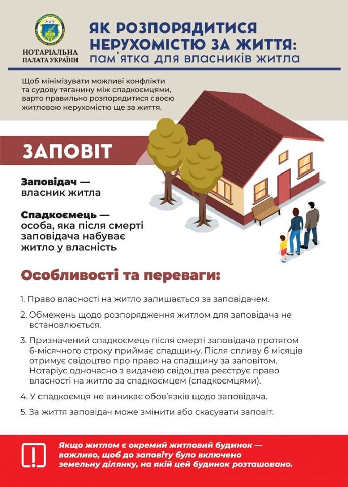

Заповіт
Інфографіка НПУ

Необхідні документи для посвідчення заповіту:
- Паспорт (звертаємо Вашу увагу на наявність в паспорті вклеєних фотографій при досягненні особою 25-річного або 45-річного віку);
- Реєстраційний номер облікової картки платника податків заповідача;
- Відомості щодо майна та відомості про спадкоємця записуються зі слів заповідача. Якщо заповіт складається на конкретно визначене майно, бажано надати правовстановлюючий документ на майно або фотокопію такого документу з метою точної ідентифікації спадкового майна. Заповідач може зробити заповіт на все майно без конкретизації.
Що необхідно знати про заповіт?
- Право власності на майно, зазначене в заповіті, переходить до спадкоємця лише після смерті спадкодавця.
- Якщо складено кілька заповітів на одне і те ж майно, але на ім’я різних осіб, то дійсним вважається той, що посвідчено останнім.
- В одному заповіті може бути зазначено кілька спадкоємців.